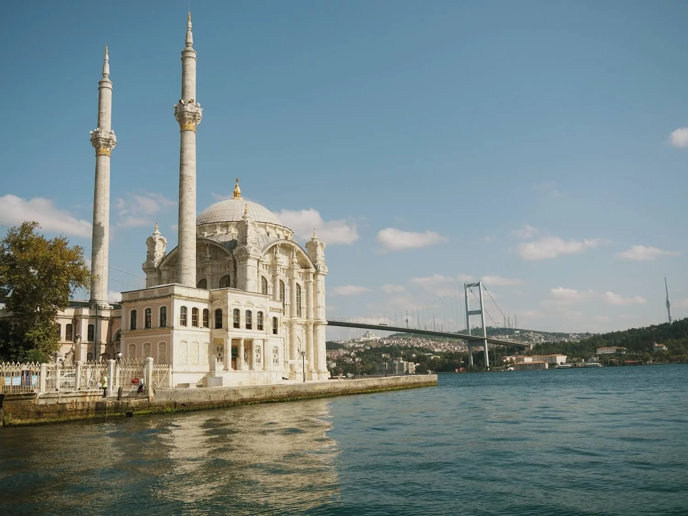
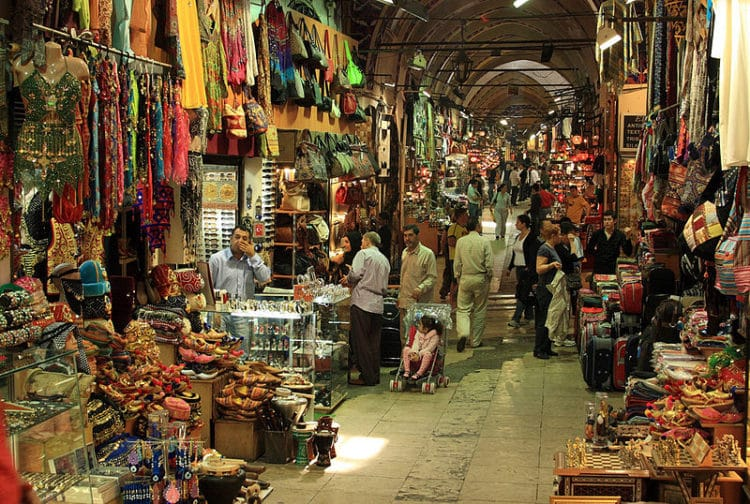

Stanbuł
Kair Rzym

Największe i najludniejsze miasto w Turcji oraz jej centrum kulturalne, handlowe i finansowe. Rozciąga się po obu stronach cieśniny morskiej Bosfor, od północnego wybrzeża Morza Marmara do południowego wybrzeża Morza Czarnego. Położenie miejscowości zarówno w europejskiej Tracji, jak i azjatyckiej Bitynii sprawia, że jest ona jedyną metropolią świata znajdującą się na dwóch kontynentach[3]. Jedno z największych miast świata, najludniejsze miasto Europy, stolica prowincji Stambuł. Rozwinięty ośrodek przemysłowy wytwarzający około ¼ produkcji kraju. Główne centrum finansowe Turcji, siedziba kilkudziesięciu banków i giełdy papierów wartościowych. Siedziba pięciu uniwersytetów, z których najstarszy – Uniwersytet Stambulski – został założony w 1863 roku. W 2018 roku Stambuł odwiedziło 12,8 mln turystów z całego świata – był ósmym najczęściej odwiedzanym miastem na świecie[4].
Hagia Sophia

Meczet w Stambule, a w przeszłości kolejno świątynia chrześcijańska, meczet i muzeum. Uważana za najważniejsze dzieło architektury bizantyńskiej. Pierwotnie budynek powstał jako kościół Mądrości Bożej (zwany też Wielkim Kościołem); wezwanie kościoła odnosi się do Mądrości Bożej jako tytułu Chrystusa. Była świątynią najwyższej rangi w Cesarstwie Bizantyńskim, katedra patriarsza oraz miejsce modłów i koronacji cesarzy bizantyjskich, na przestrzeni wieków niedościgniony wzór świątyni doskonałej i niemal symbol Kościoła bizantyńskiego. Ufundowana przez Justyniana I Wielkiego, w obecnym kształcie powstawała w okresie od 23 lutego 532 do 27 grudnia 537. Po zdobyciu Konstantynopola przez Turków w 1453 została zamieniona na meczet (wtedy dobudowano minarety). Świątynię miał przyćmić wybudowany w XVII wieku Błękitny Meczet. Od 1934 do lipca 2020 świątynia pełniła rolę muzeum. Po decyzji sądu administracyjnego Turcji unieważniającego dekret z 1934 i decyzji prezydenta Recepa Tayyipa Erdoğana została ponownie zamieniona w meczet. Do końca 2023 roku była dostępna dla zwiedzających za darmo. Od stycznia 2024 wstęp dla zwiedzających jest płatny i dostępna jest dla nich tylko galeria na piętrze. Parter jest dostępny jedynie dla wyznawców islamu. Tym samym jest to jedyny meczet w Stambule pobierający opłatę za zwiedzanie.
Wielki Bazar

Miejsce handlu w Stambule w Turcji. Jest jednym z największych obiektów tego typu w Turcji. Bazar zajmuje powierzchnię 30 hektarów, ma 61 ulic z około 3500 sklepikami, 22 bramy, restauracje i kawiarnie, dwa meczety i cztery fontanny. Sprzedaje się tu między innymi przyprawy, biżuterię, wyroby garncarskie oraz dywany. W epoce Bizancjum znajdował się tutaj plac, na którym kupcy sprzedawali swoje towary. Po zdobyciu miasta przez Turków, na rozkaz sułtana Mehmeda Zdobywcy zbudowano w 1464 dwie hale dla jubilerów i antykwariuszy. Dookoła nich stopniowo zaczęły powstawać kolejne sklepiki. Po każdym zniszczeniu przez pożar czy trzęsienie ziemi bazar odnawiano i powiększano. Obecny kształt pochodzi z XIX w. Kryty Bazar był w przeszłości również miejscem, gdzie zawierano transakcje bankowe i giełdowe. Do XIX w. odbywał się tutaj również handel niewolnikami. Wraz z rozwojem turystyki tradycyjne wyroby zostały zastąpione pamiątkami dla turystów.